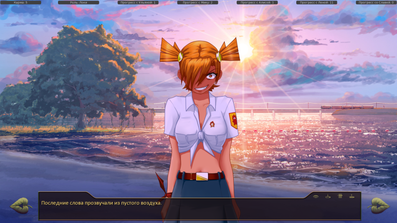
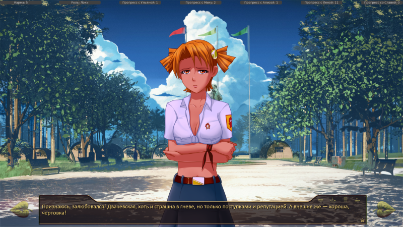
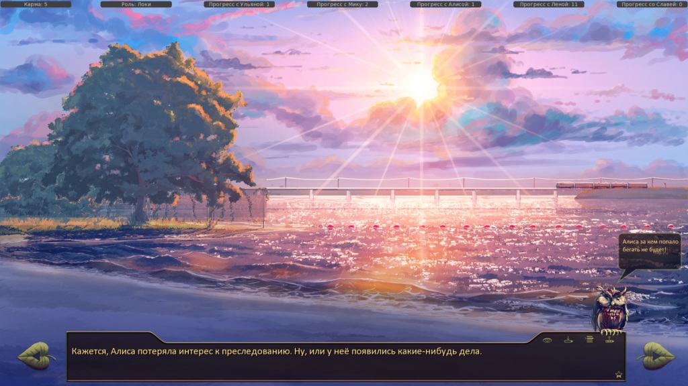

7дл v 0.9e (хотфикс от 05.11) Лена-7дл-рут, д.5
Страница 1 из 2 • 1, 2 
7дл v 0.9e (хотфикс от 05.11) Лена-7дл-рут, д.5
автор 7dl-kun в Вт 4 Ноя 2014 - 15:11
Забирать здесь: rghost.ru/58907377
Последний раз редактировалось: 7dl-kun (Чт 6 Ноя 2014 - 13:23), всего редактировалось 5 раз(а)

7dl-kun- Находка для шпиона

- Сообщения : 3026
Дата регистрации : 2014-09-07
Откуда : здесь столько наркоманов?
Re: 7дл v 0.9e (хотфикс от 05.11) Лена-7дл-рут, д.5
автор peregarrett в Вт 4 Ноя 2014 - 16:01

peregarrett- Находка для шпиона
- Сообщения : 3264
Дата регистрации : 2014-09-07
Возраст : 36
Гость- Гость
Re: 7дл v 0.9e (хотфикс от 05.11) Лена-7дл-рут, д.5
автор Arlien в Вт 4 Ноя 2014 - 19:55
Arlien- Людовед

- Сообщения : 1322
Дата регистрации : 2014-09-08
Re: 7дл v 0.9e (хотфикс от 05.11) Лена-7дл-рут, д.5
автор Chess в Вт 4 Ноя 2014 - 21:43

Chess- Находка для шпиона
- Сообщения : 3798
Дата регистрации : 2014-10-05
Откуда : Город на краю света
Re: 7дл v 0.9e (хотфикс от 05.11) Лена-7дл-рут, д.5
автор peregarrett в Вт 4 Ноя 2014 - 21:52
peregarrett- Находка для шпиона
- Сообщения : 3264
Дата регистрации : 2014-09-07
Возраст : 36
Re: 7дл v 0.9e (хотфикс от 05.11) Лена-7дл-рут, д.5
автор Chess в Вт 4 Ноя 2014 - 21:56
Chess- Находка для шпиона
- Сообщения : 3798
Дата регистрации : 2014-10-05
Откуда : Город на краю света
Re: 7дл v 0.9e (хотфикс от 05.11) Лена-7дл-рут, д.5
автор peregarrett в Вт 4 Ноя 2014 - 22:09
- Только ТССС!:
можно открыть сценарий и поменять условие на нужное.
peregarrett- Находка для шпиона
- Сообщения : 3264
Дата регистрации : 2014-09-07
Возраст : 36
Re: 7дл v 0.9e (хотфикс от 05.11) Лена-7дл-рут, д.5
автор Chess в Вт 4 Ноя 2014 - 22:11
Chess- Находка для шпиона
- Сообщения : 3798
Дата регистрации : 2014-10-05
Откуда : Город на краю света
Re: 7дл v 0.9e (хотфикс от 05.11) Лена-7дл-рут, д.5
автор peregarrett в Вт 4 Ноя 2014 - 22:34
Д2, после турнира, отказался спорить с Алисой и проиграл Лене, потом "Да в чем дело-то?!":
- Спойлер:

Дальше бежим по лагерю как обычно:
- Спойлер:

Ну и блин, опять пункты на карте ведут на утренний обход.
Короче, вынеси уже кусок с беготней по лагерю
- Код:
if alt_day2_chase2:
show dv rage pioneer2
...
"Тихая, тёплая ночь."
if lp_dv > 3 and alt_day2_dv_bet_approve:
$ alt_day2_date = 3
jump alt_day_2_slot_dv2
else:
"Искупавшись, я собрал одежду, и, немного просохнув под вечерным солнцем, оделся и пошёл на площадь."
"Кажется, Алиса потеряла интерес к преследованию. Ну, или у неё появились какие-нибудь дела."
"Надо думать, чем занять вечер."
window hide
$ disable_current_zone ()
jump alt_day_2_mapEv
И, еще в условие на пляже "if been_there()>1" добавить "or alt_day2_chase2"
EDIT: сам наваял фикс:
терки после турнира:
- Код:
"Да в чём дело-то?!":
if loki:
"Просто, понимаешь…Мне очень, прямо безмерно, хотелось увидеть… Как ты исполнишь свою угрозу!"
$ karma = karma + 10
$ alt_day2_chase2 = True
jump alt_day2_Ev_dv_chase2
else:
- Код:
label alt_day2_Ev_dv_chase2:
show dv rage pioneer2
stop music fadeout 0
with None
play sound sfx_angry_ulyana
with flash_red
play music music_list["awakening_power"]
"Последние слова прозвучали из пустого воздуха. {w} Быть битым мне совершенно не улыбалось, но после таких слов я бы себе сам подзатыльник отвесил точно."
scene bg ext_square_day with flash:
pos (0,0)
linear 0.1 pos (-5,-5)
linear 0.1 pos (5,5)
pos (0,0)
linear 0.1 pos (0,-5)
linear 0.1 pos (0,5)
repeat
with dissolve
"Пока я шевелил ногами, мне пришло в голову, что в этом лагере я бегаю столько, сколько не бегал никогда. Каждый день, да в полную силу, да на длинные дистанции. "
"Ещё я гадал, сразу ли Алиса даст мне в нос, когда догонит. То есть, ЕСЛИ догонит."
scene bg ext_aidpost_day with flash:
pos (0,0)
linear 0.1 pos (-5,-5)
linear 0.1 pos (5,5)
pos (0,0)
linear 0.1 pos (0,-5)
linear 0.1 pos (0,5)
repeat
with dissolve
"Все возможности у неё были. И она, кажется, не хотела их упускать. Однако, по сравнению со вчерашней гонкой, эта была чуть милосерднее, в конце концов, это не я сегодня за кем-то гонялся. "
scene bg ext_dining_hall_away_day with flash:
pos (0,0)
linear 0.1 pos (-5,-5)
linear 0.1 pos (5,5)
pos (0,0)
linear 0.1 pos (0,-5)
linear 0.1 pos (0,5)
repeat
with dissolve
scene bg ext_square_day
"Мы пробежали подмышкой у Генды, обогнули склад, свернули к волейбольной площадке."
"Вообще волейбольно-пионербольной. Последняя игра, всегда поражающая меня своей либеральностью, игралась тоже здесь. Если удавалось набрать хотя бы по три участника со стороны."
"Пригнувшись, я пробежал под сеткой и развернулся."
show dv sad pioneer2
stop music fadeout 3
"Признаюсь, залюбовался! Двачевская, хоть и страшна в гневе, но только поступками и репутацией. А внешне же — хороша, чертовка!"
"Я дёрнулся влево, и она продублировала моё движение."
"После чего мне оставалось только плавно проскользнуть мимо неё, влекомой инерцией, и припустить вниз по дороге. Как мне стало понятно через минутку, ведущей к пляжу. "
window hide
scene bg ext_beach_sunset with fade
play ambience ambience_lake_shore_evening fadein 2
window show
"Как я давно хотел попасть сюда! "
"Но не при таких же обстоятельствах!"
"Щедро насыпанный песчаный язык полз под ногами, заставляя буксировать, и бежать было крайне тяжело."
"Я сделал ещё несколько шагов и встал, пытаясь отдышаться."
"Тяжёлое дыхание по правую руку свидетельствовало о том, что и Алисе пришлось попотеть. Это не могло не радовать."
"Я сел на песок и сбросил обувь, сверху бросил шорты с рубашкой, чёртову удавку-галстук… {w}И с разбегу нырнул в чёрную под ночным небом воду."
"Тихая, тёплая ночь."
if lp_dv > 3 and alt_day2_dv_bet_approve:
$ alt_day2_date = 3
jump alt_day_2_slot_dv2
else:
"Искупавшись, я собрал одежду, и, немного просохнув под вечерным солнцем, оделся и пошёл на площадь."
"Кажется, Алиса потеряла интерес к преследованию. Ну, или у неё появились какие-нибудь дела."
"Надо думать, чем занять вечер."
window hide
jump alt_day_2_mapEv_prepare
peregarrett- Находка для шпиона
- Сообщения : 3264
Дата регистрации : 2014-09-07
Возраст : 36
Re: 7дл v 0.9e (хотфикс от 05.11) Лена-7дл-рут, д.5
автор malefactor в Ср 5 Ноя 2014 - 1:05
Потом, когда Славя уходит и вместо неё садится Лена, одна реплика той произносится от имени Слави, конкретно: "Да там..." - "Семён" - мягко перебила она.
Спрайта ОД при разговоре с ней в столовой после пляжа нет.
И - бац, в лесу с Леной и Славей.
- Спойлер:
- I'm sorry, but an uncaught exception occurred.
While running game code:
File "game/scenario_alt/routes/alt_un_7dl_route2.rpy", line 3059, in script
Exception: u'/i' closes a text tag that isn't open.
-- Full Traceback ------------------------------------------------------------
Full traceback:
File "C:\Users\Ro\Downloads\everlasting_summer-1.1-all\everlasting_summer-1.1-all\renpy\bootstrap.py", line 265, in bootstrap
renpy.main.main()
File "C:\Users\Ro\Downloads\everlasting_summer-1.1-all\everlasting_summer-1.1-all\renpy\main.py", line 327, in main
run(restart)
File "C:\Users\Ro\Downloads\everlasting_summer-1.1-all\everlasting_summer-1.1-all\renpy\main.py", line 78, in run
renpy.execution.run_context(True)
File "C:\Users\Ro\Downloads\everlasting_summer-1.1-all\everlasting_summer-1.1-all\renpy\execution.py", line 509, in run_context
context.run()
File "C:\Users\Ro\Downloads\everlasting_summer-1.1-all\everlasting_summer-1.1-all\renpy\execution.py", line 288, in run
node.execute()
File "C:\Users\Ro\Downloads\everlasting_summer-1.1-all\everlasting_summer-1.1-all\renpy\ast.py", line 455, in execute
renpy.exports.say(who, what, interact=self.interact)
File "C:\Users\Ro\Downloads\everlasting_summer-1.1-all\everlasting_summer-1.1-all\renpy\exports.py", line 803, in say
who(what, interact=interact)
File "C:\Users\Ro\Downloads\everlasting_summer-1.1-all\everlasting_summer-1.1-all\renpy\character.py", line 807, in __call__
self.do_display(who, what, cb_args=self.cb_args, **display_args)
File "C:\Users\Ro\Downloads\everlasting_summer-1.1-all\everlasting_summer-1.1-all\renpy\character.py", line 673, in do_display
**display_args)
File "C:\Users\Ro\Downloads\everlasting_summer-1.1-all\everlasting_summer-1.1-all\renpy\character.py", line 476, in display_say
rv = renpy.ui.interact(mouse='say', type=type, roll_forward=roll_forward)
File "C:\Users\Ro\Downloads\everlasting_summer-1.1-all\everlasting_summer-1.1-all\renpy\ui.py", line 237, in interact
rv = renpy.game.interface.interact(roll_forward=roll_forward, **kwargs)
File "C:\Users\Ro\Downloads\everlasting_summer-1.1-all\everlasting_summer-1.1-all\renpy\display\core.py", line 1853, in interact
repeat, rv = self.interact_core(preloads=preloads, **kwargs)
File "C:\Users\Ro\Downloads\everlasting_summer-1.1-all\everlasting_summer-1.1-all\renpy\display\core.py", line 2168, in interact_core
self.draw_screen(root_widget, fullscreen_video, (not fullscreen_video) or video_frame_drawn)
File "C:\Users\Ro\Downloads\everlasting_summer-1.1-all\everlasting_summer-1.1-all\renpy\display\core.py", line 1418, in draw_screen
renpy.config.screen_height,
File "render.pyx", line 365, in renpy.display.render.render_screen (gen\renpy.display.render.c:4568)
File "render.pyx", line 166, in renpy.display.render.render (gen\renpy.display.render.c:2033)
File "C:\Users\Ro\Downloads\everlasting_summer-1.1-all\everlasting_summer-1.1-all\renpy\display\layout.py", line 521, in render
surf = render(child, width, height, cst, cat)
File "render.pyx", line 95, in renpy.display.render.render (gen\renpy.display.render.c:2291)
File "render.pyx", line 166, in renpy.display.render.render (gen\renpy.display.render.c:2033)
File "C:\Users\Ro\Downloads\everlasting_summer-1.1-all\everlasting_summer-1.1-all\renpy\display\layout.py", line 521, in render
surf = render(child, width, height, cst, cat)
File "render.pyx", line 95, in renpy.display.render.render (gen\renpy.display.render.c:2291)
File "render.pyx", line 166, in renpy.display.render.render (gen\renpy.display.render.c:2033)
File "C:\Users\Ro\Downloads\everlasting_summer-1.1-all\everlasting_summer-1.1-all\renpy\display\layout.py", line 521, in render
surf = render(child, width, height, cst, cat)
File "render.pyx", line 95, in renpy.display.render.render (gen\renpy.display.render.c:2291)
File "render.pyx", line 166, in renpy.display.render.render (gen\renpy.display.render.c:2033)
File "C:\Users\Ro\Downloads\everlasting_summer-1.1-all\everlasting_summer-1.1-all\renpy\display\screen.py", line 295, in render
child = renpy.display.render.render(self.child, w, h, st, at)
File "render.pyx", line 95, in renpy.display.render.render (gen\renpy.display.render.c:2291)
File "render.pyx", line 166, in renpy.display.render.render (gen\renpy.display.render.c:2033)
File "C:\Users\Ro\Downloads\everlasting_summer-1.1-all\everlasting_summer-1.1-all\renpy\display\layout.py", line 521, in render
surf = render(child, width, height, cst, cat)
File "render.pyx", line 95, in renpy.display.render.render (gen\renpy.display.render.c:2291)
File "render.pyx", line 166, in renpy.display.render.render (gen\renpy.display.render.c:2033)
File "C:\Users\Ro\Downloads\everlasting_summer-1.1-all\everlasting_summer-1.1-all\renpy\display\layout.py", line 889, in render
st, at)
File "render.pyx", line 95, in renpy.display.render.render (gen\renpy.display.render.c:2291)
File "render.pyx", line 166, in renpy.display.render.render (gen\renpy.display.render.c:2033)
File "C:\Users\Ro\Downloads\everlasting_summer-1.1-all\everlasting_summer-1.1-all\renpy\display\layout.py", line 521, in render
surf = render(child, width, height, cst, cat)
File "render.pyx", line 95, in renpy.display.render.render (gen\renpy.display.render.c:2291)
File "render.pyx", line 166, in renpy.display.render.render (gen\renpy.display.render.c:2033)
File "C:\Users\Ro\Downloads\everlasting_summer-1.1-all\everlasting_summer-1.1-all\renpy\text\text.py", line 1400, in render
layout = Layout(self, width, height, renders)
File "C:\Users\Ro\Downloads\everlasting_summer-1.1-all\everlasting_summer-1.1-all\renpy\text\text.py", line 482, in __init__
self.paragraphs = self.segment(text.tokens, style, renders)
File "C:\Users\Ro\Downloads\everlasting_summer-1.1-all\everlasting_summer-1.1-all\renpy\text\text.py", line 759, in segment
raise Exception("%r closes a text tag that isn't open." % text)
Exception: u'/i' closes a text tag that isn't open.
Windows-7-6.1.7600
Ren'Py 6.16.3.502
Everlasting Summer 1.0
Сейчас сам пофикшу как Герку протестирую.
malefactor- Сыч

- Сообщения : 26
Дата регистрации : 2014-10-11
Re: 7дл v 0.9e (хотфикс от 05.11) Лена-7дл-рут, д.5
автор Arlien в Ср 5 Ноя 2014 - 2:31
- покушать принес:
- 44 – «В общем и целом», без дефиса
164 – запятая после «указать»
179 – обратно «В общем»
239 – «МоменЫ»
337 – «ГлядЯт»
355 – первую «и» лучше заменить на запятую
358 – лишние запятые вокруг «вот»
433 – запятая нужна
442 – «сегоДня»
530 – «где таМ был матрац»
1023 – и снова «в общем»
1134 – «необятая» это какой-то особый армейский фразеологизм или…?
1223 – мягкий знак во второй площади
1295 – «сигналами горна», падежное несоответствие
1320 - снова
1323 – обратно
1348 – «ладонЯх»
1383 – кажется, бесхозная реплика
1410 – возможно, «там», а не «так»
1452 – может, просто «выбор», а не другой?
1571 – ага
1746 – наверное, th, а не ме
2152 – не сл, а ун
2247 – запятая после Евы
2257 – «женщин-полицейских» через дефис
2258 – снова, в общем
2303 – после-после, треба перефразировать
2339 – обратно
2347 – не «я», а «а»
2360 – вроде как тире должно быть после «так и звали»
2515 – ми, а не ун
2520 – «во сне», а не «во вне»
2614 – обратно в общем
2623 – «как на грех» раздельно и в запятых
2673 – «в тебе»
2708 – запятая перед «что»
2954 – после «в окружающем лесу» запятая
3059 – «би»?..
3128 – «костер», наверное?
3154 – «зОла»
3156 – «сослагательнОМ»
3158 – в общем
3159 – запятая после «прекрасными»
3515 – «поймала»
3520 – «не будеМ»
3889 – «не давая»
4063 – снова
4119 – «освобожденнОМУ»
4356 – и снова
4489 – «дней»
Arlien- Людовед
- Сообщения : 1322
Дата регистрации : 2014-09-08
Re: 7дл v 0.9e (хотфикс от 05.11) Лена-7дл-рут, д.5
автор malefactor в Ср 5 Ноя 2014 - 2:47
"Ладно. Площадь - значит площадЬ".
За завтраком спрайт ОД, после того как та уходит, стоит поверх спрайта Лены.
И на пляже, после ухода Лены спрайт оной закрывает спрайт Мику.
malefactor- Сыч
- Сообщения : 26
Дата регистрации : 2014-10-11
Re: 7дл v 0.9e (хотфикс от 05.11) Лена-7дл-рут, д.5
автор Chess в Ср 5 Ноя 2014 - 9:57
Семён сдаёт Славе тележку с мусором, переодевается и, судя по диалогу, они разговаривают за обедом в столовой. Картинка при этом зависает на складе. Разговор со Славей, разговор с Леной, и аж до самого пляжа.
Chess- Находка для шпиона
- Сообщения : 3798
Дата регистрации : 2014-10-05
Откуда : Город на краю света
Re: 7дл v 0.9e (хотфикс от 05.11) Лена-7дл-рут, д.5
автор 7dl-kun в Ср 5 Ноя 2014 - 11:00
Огромное спасибо за вычитку. Какое-то дикое количество "в-общем", получилось. Хотя я продолжаю считать, что здесь оно употребляется как наречие. В любом случае, 90% оного я постарался заменить.Arlien пишет:
- покушать принес:
Тем временем, выкатил хотфикс - спасибо всем неравнодушным за то, что помогаете делать сценарий лучше!
7dl-kun- Находка для шпиона
- Сообщения : 3026
Дата регистрации : 2014-09-07
Откуда : здесь столько наркоманов?
Re: 7дл v 0.9e (хотфикс от 05.11) Лена-7дл-рут, д.5
автор peregarrett в Ср 5 Ноя 2014 - 16:20
Похоже, пора встраивать в интерфейс совенка-советчика а-ля скрепки в старом мс-ворде, чтоб он давал намеки где куда можно свернуть. И выдавать этого помощника после прохождения сыч-ветки
peregarrett- Находка для шпиона
- Сообщения : 3264
Дата регистрации : 2014-09-07
Возраст : 36
Re: 7дл v 0.9e (хотфикс от 05.11) Лена-7дл-рут, д.5
автор 7dl-kun в Ср 5 Ноя 2014 - 16:29
7dl-kun- Находка для шпиона
- Сообщения : 3026
Дата регистрации : 2014-09-07
Откуда : здесь столько наркоманов?
Re: 7дл v 0.9e (хотфикс от 05.11) Лена-7дл-рут, д.5
автор Chess в Ср 5 Ноя 2014 - 16:31
Ленофаг дословно - жрущий Леночку. ))
Chess- Находка для шпиона
- Сообщения : 3798
Дата регистрации : 2014-10-05
Откуда : Город на краю света
Re: 7дл v 0.9e (хотфикс от 05.11) Лена-7дл-рут, д.5
автор peregarrett в Ср 5 Ноя 2014 - 16:32
- Мама, мама, смотри - мальчик ест девочку!Chess пишет:Ленофил.
Ленофаг дословно - жрущий Леночку. ))
- Нет, сынок это они целу... Ох бля и вправду ест!!!
пардон за оффтоп =)
peregarrett- Находка для шпиона
- Сообщения : 3264
Дата регистрации : 2014-09-07
Возраст : 36
Re: 7дл v 0.9e (хотфикс от 05.11) Лена-7дл-рут, д.5
автор Arlien в Ср 5 Ноя 2014 - 23:51
- Спойлер:
Сначала по конструктиву.
"Она любила рисовать" на мой взгляд интегрирован неудачно. Может, конечно, играет впечатление от начального чтения на фикбуке, нужно еще уточнять у тех, кто не читал до собственно интеграции.
Зарисовка самодостаточна и художественно цельна, а в руте вписана в конкретную диспозицию - это "Лена рассказывает Семену в библиотеке", и в этой диспозиции оно выглядит слишком кинтетично.
Потому что вроде как это Семен рассказ слушает, а на самом деле это просто рассказ. Реакции слушателя нет, и самого слушателя нет, и диспозиция исчезла.
И это про том, что даже меня, читателя-перед-монитором, дергает изрядно, когда я энтот рассказ читаю! А как должно корежить человека, который это вживую слушает, в исполнении небезраличного человека?.. а этого нету. Потому что и слушателя на сцене нету.
И нет, я ни в коем случае не предлагаю эти реакции добавлять – ну, то есть конечно вам виднее, но ИМХО зарисовка, как уже было сказано выше, цельная, завершенная и самодостаточная. И очень, очень мощная. Проблема не в ней, проблема в ее подключении к линии основного повествования.
Возможно, стоит сделать ее не рассказом, а сном? Или, как энто там было… «эдейтическим образом»? Или вовсе реверс бэк-лупом? В конце концов, если Лена подсекает Семину житуху-из-будущего, почему бы ему (под влиянием, ага) не подсечь ее прошлое? С комментариями хозяина этого прошлого?
А теперь по неконструктиву. Знаете, кормовую турель мне взрывом оторвало к черту - теперь там монокок розочкой, арматура, кабеля искрят и чумазый борстрелок кажет в дыру всякое неприличное. И гнусно матерится. Так что я уберу второй пункт под спойлер в спойлере - как в инсепшоне, да-да, вершина разметочного мастерства, и не рекомендую его читать никому. Вообще.- Спойлер:
Есть, в общем, такой хороший китайский фильм – «Чародей и Белая змея». И вот там главный герой в исполнении Джета Нашего Ли, после того, как его родной монастырь топит нафиг злобный змеедемон, думает … «Я всю жизнь был приверженцем дхармы, стремился к порядку и благообразию… За что мне такие беды?»
Вот так и тут.
В каждом. Гребаном. Руте. Обязательно. Без вариантов! Нужно показать, какая Славя шлюха и тварь!
Просто *нецензурная брань* без вариантов! Нужен щитшторм? Вызывайте Славю! Нужен разврат на пустом месте? Вызывайте Славю!
Никто *нецензурная брань* не ведет себя на чужих рутах настолько же подло, мерзко и аморально, как она! Рефлекс, что ли, у публики наработать пытаетесь? Мол, видишь косы на горизонте – сжимай булки, щас дерьмо пойдет на вентилятор?
Просто уже вымораживает.
Но еще больше вымораживает и бесит, что подобное по результатам обсуждений вроде как выпиливается, «да», мол, «фигня вышла» - ровно для того, чтобы всплыть опять в практически том же виде далее!
Скажите уже «Иди нахуй, я так вижу!», я завалюсь и просто буду тихо-мирно скипать любые сегменты, где всплывает метка sl.
Но так-то нахрена делать?..
Последний раз редактировалось: Arlien (Чт 6 Ноя 2014 - 1:07), всего редактировалось 1 раз(а) (Обоснование : ну это-то можно из-под спойлера убрать)
Arlien- Людовед
- Сообщения : 1322
Дата регистрации : 2014-09-08
Re: 7дл v 0.9e (хотфикс от 05.11) Лена-7дл-рут, д.5
автор Гость в Чт 6 Ноя 2014 - 0:24
Гость- Гость
Re: 7дл v 0.9e (хотфикс от 05.11) Лена-7дл-рут, д.5
автор 7dl-kun в Чт 6 Ноя 2014 - 0:52
7dl-kun- Находка для шпиона
- Сообщения : 3026
Дата регистрации : 2014-09-07
Откуда : здесь столько наркоманов?
Re: 7дл v 0.9e (хотфикс от 05.11) Лена-7дл-рут, д.5
автор peregarrett в Чт 6 Ноя 2014 - 2:21
На интерфейс сажаем совенка с заставки, когда ему есть что сказать - у него светятся глаза. При клике появляется отдельное окошко с текстом:

В коде, соответсвенно, в этом месте написано:
- Код:
if adviceowl_check(lp_dv > 3 and alt_day2_dv_bet_approve, "", "Алиса за кем попало бегать не будет!"):
$ alt_day2_date = 3
jump alt_day_2_slot_dv2
else:
"Искупавшись, я собрал одежду, и, немного просохнув под вечерным солнцем, оделся и пошёл на площадь."
"Кажется, Алиса потеряла интерес к преследованию. Ну, или у неё появились какие-нибудь дела."
"Надо думать, чем занять вечер."
window hide
$ disable_current_zone ()
jump alt_day_2_mapEv_prepare
Да, и в игре непосредственно перед погоней таки мелькает фон с пляжем. Мелочь, а неприятно.
peregarrett- Находка для шпиона
- Сообщения : 3264
Дата регистрации : 2014-09-07
Возраст : 36
Re: 7дл v 0.9e (хотфикс от 05.11) Лена-7дл-рут, д.5
автор malefactor в Чт 6 Ноя 2014 - 2:46
ВЛКСМ - это же комсомол, какой смысл ЛССР было из него выходить (более того, там юридическая субъектность не того порядка, всё равно, что СФО вышел бы из состава Следственного комитета, например)? Литва объявила в одностороннем порядке о своей независимости в 1990 году. Если что не так - поправьте, я свой учебник по истории в школе скурил.dreamgirl "Восемьдесят девятый год - из состава ВЛКСМ выходит Литва, решив образовать собственный коммунистический союз."
А вообще несколько подсократил бы все эти рассуждения Семёна на исторические темы, вместо прочувствования датфила хочется в полемику вступить, лол.
Ну вот с Вики разве что:
19—20 декабря состоялся XX съезд КПЛ. Делегаты съезда 855 голосами против 160 решили отделиться от Коммунистической партии Советского Союза (КПСС), став самостоятельной республиканской компартией.
Т.е. КПЛ отделяется от КПСС, ну и автоматически литовский комсомол, как молодёжное крыло компартии, отделяется от ВЛКСМ. Всё равно перефразировать надо.
Пардон за буквоедство
malefactor- Сыч
- Сообщения : 26
Дата регистрации : 2014-10-11
Re: 7дл v 0.9e (хотфикс от 05.11) Лена-7дл-рут, д.5
автор Гость в Чт 6 Ноя 2014 - 3:45
- Спойлеры, антикрылья, интерцепторы, закрылки и законцовки:
- Вы, похоже, заразились моей идеей сделать из Слави антигероя? Или это так изначально задумано было???
Гость- Гость
Страница 1 из 2 • 1, 2